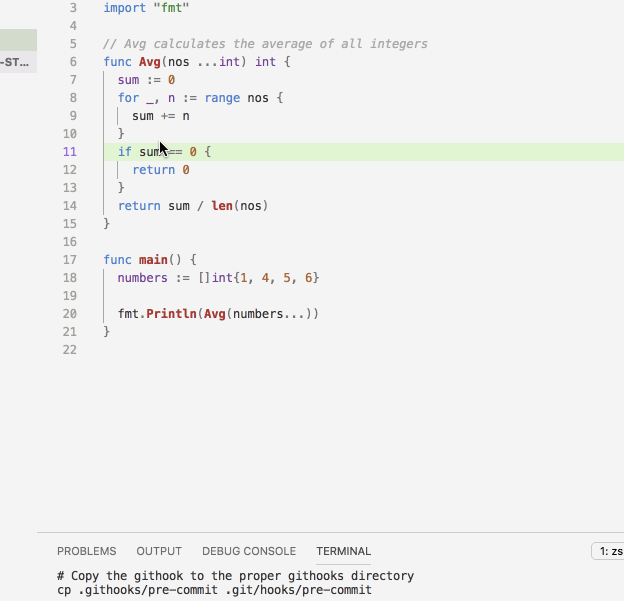

Testing Your Go App: Get Started the Easy Way
Aug 20, 2018 07:32 · 763 words · 4 minutes read
TLDR: VS Code can generate the foundation for your table driven tests and git precommit hooks can enforce successful tests before reaching Github
Gabriel Aszalos gave an excellent introductory blog post to testing in Golang; I recommend you read it: Your Introductory Course to Testing with Go. On top of this, I want to mention that your IDE can help you do some heavy lifting when writing tests, specifically, VS Code.
VS Code
VS Code (Visual Studio Code) has provided an execellent experience as a Golang developer. It’s in the middle between light-weight Sublime and heavy-weight GoLand with all the features you need, without slowing down your machine.
Also, huge shoutout to the original lukehoban.Go VS Code extention that got me hooked on VS Code a few years back. Since then, Microsoft started officially owning the Go extention, and VS Code has continued to grow, adding all sorts of awesome capabilities (some of which you’ll see below).
Code and Tests
If you’re lucky and in a development environment that isn’t extremely rushed, you ought to be following traditional TDD (Test Driven Development) where tests are written first, then your code is backfilled to satisfy the test cases. Also, along the way you’d write unit tests for each function that isn’t explicitly covered by the tests above for further test coverage.
However, if you’re in a rushed environment, tests sometimes get thrown to the wind–which is bad for many reasons (companies may see short-term growth in delivered software, but this incurs tech debt that will cost companies in the long run). To help cut down on accumulating tech debt in rushed environments, you can still write tests quickly. Said differently, let your IDE write tests for you.
Let’s say you have a main.go file that looks like:
package main
import "fmt"
// Avg calculates the average of all integers
func Avg(nos ...int) int {
sum := 0
for _, n := range nos {
sum += n
}
if sum == 0 {
return 0
}
return sum / len(nos)
}
func main() {
numbers := []int{1, 4, 5, 6}
fmt.Println(Avg(numbers...))
}
To generate tests with VS Code, all you have to do is:
- Highlight a section of your
Avgfunction - Right click
- Select
Go: Generate Unit Tests for Function

Which will then create main_test.go with stubbed out table-driven-tests. All you have to do is go in and give it some use cases. This saves a ton of time since you don’t have to write the boilerplate.
Adding Use Cases
Here is what the generated main_test.go file will look like:
package main
import "testing"
func TestAvg(t *testing.T) {
type args struct {
nos []int
}
tests := []struct {
name string
args args
want int
}{
// TODO: Add test cases.
}
for _, tt := range tests {
t.Run(tt.name, func(t *testing.T) {
if got := Avg(tt.args.nos...); got != tt.want {
t.Errorf("Avg() = %v, want %v", got, tt.want)
}
})
}
}
Inside the TODO: Add test cases. section, add some test cases:
{
args: args{
nos: []int{2, 2},
},
want: 2,
},
{
args: args{
nos: []int{-1, 0, 1},
},
want: 0,
},
{
args: args{
nos: []int{-4, -4, -4, -4},
},
want: -4,
},
From there, just run go test to test your code!
Enforce Successful Tests in Precommit
There are multiple points where tests can be enforced: precommit, premerge, predeploy, etc. Each have their own benefits and downfalls. However, the gateway-drug for test enforcement is at precommit time (it’s just the most simple to setup and use).
Create a file named pre-commit and add 1 line:
go test
Give this file the proper permissions then copy it to your .git/hooks directory:
chmod a+x pre-commit && cp pre-commit .git/hooks/pre-commit
Now your git commit command will fail if the commands in your pre-commit fail (if go test fails).
Conclusion
Tests are an important part of the development lifecycle for you as a developer and for the organization you’re working with. Using a statically typed language as Go, there usually ends up being a lot more boilerplate that you have to deal with compared to Python or NodeJS. Since you don’t want to be a code monkey writing repetative code, there are usually 2 ways to overcome the boilerplate: use libraries or generate code. In many cases, I prefer generating code, especially because it adheres to Rob Pike’s Go Proverbs:
A little copying is better than a little dependency
So, let your IDE do the heavy lifting; generate your table driven test foundation. 😊
Reference Code
Code from this post is located in Github.